GUIDA PRATICA
La tastiera e lo scanner della cassa, sul tuo dispositivo.
Keyb(ED)It! non è un gestionale. È una tastiera e uno scanner virtuale: sostituisce o affianca la tastiera fisica e il lettore di codici a barre del registratore. I comandi partono dal tablet o dal PC, ma è sempre la cassa collegata a eseguirli.
Non crea una cassa indipendente e non tiene un proprio magazzino o un catalogo separato. Anche le liste di reparti, articoli, pagamenti e clienti mostrano le voci lette dal registratore: aggiornarle significa rileggerle dalla cassa, non programmarle nell'app.
Installa Keyb(ED)It! da Google Play
La versione Android è destinata ai tablet compatibili. Prima di installare, controlla su Google Play i requisiti del dispositivo e della cassa. Per l'uso serve un registratore compatibile: l'app non lo sostituisce.
Le schermate e i brevi filmati mostrano operazioni reali con SMARTY EVO, fatte dai tasti di Keyb(ED)It!. Nomi dei reparti, pagamenti e funzioni possono cambiare in base alla tua cassa. Le immagini sono ritagliate e gli identificativi sono oscurati. Tocca un'immagine per ingrandirla; nei video premi Riproduci e attiva le didascalie se ti sono utili. I passaggi sono spiegati anche nel testo.
I filmati non hanno audio e le attese sono tagliate: sulla tua cassa attendi sempre il riscontro reale. Le vendite usate per queste riprese sono state annullate prima dell'incasso; non mostrano un pagamento concluso.
PRIMI PASSI
Collegare la cassa
Accendi il registratore e controlla che abbia carta. Al primo utilizzo chiedi al tuo tecnico di predisporre il collegamento con Keyb(ED)It! e di indicarti la modalità adatta.
Con la rete del negozio (Wifi)
- Collega il tablet o PC alla stessa rete della cassa.
- Apri Impostazioni con il pulsante a ingranaggio.
- Seleziona Wifi.
- Premi Cerca oppure inserisci nei quattro riquadri l'indirizzo della tua cassa, fornito dal tecnico.
- Controlla l'indirizzo e premi Connetti una sola volta.
- Attendi Connesso e il completamento del caricamento. Poi premi Chiudi per tornare alla tastiera.
L'indirizzo nell'immagine è solo un esempio: usa quello della tua cassa.

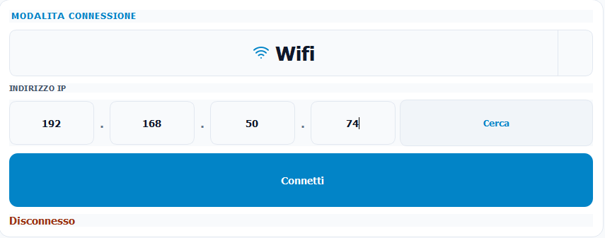
Con Bluetooth
- Verifica con il tecnico che la cassa e il tuo dispositivo supportino questo collegamento.
- Attiva il Bluetooth sul dispositivo e resta vicino alla cassa.
- In Impostazioni scegli Bluetooth, poi Scansiona.
- Consenti le autorizzazioni richieste dal dispositivo, seleziona la tua cassa e premi Connetti.
- Attendi che il caricamento sia terminato prima di usare i tasti.
Collegamento con cavo su Windows
Usa un cavo e una porta predisposti dal tecnico. Seleziona Seriale nelle Impostazioni, premi Aggiorna, scegli la porta COM indicata dal tecnico e premi Connetti. Non scegliere una porta a caso.
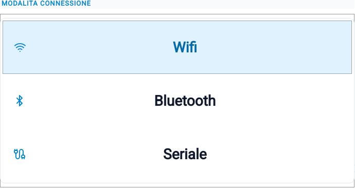
ORIENTARSI
Conoscere la schermata
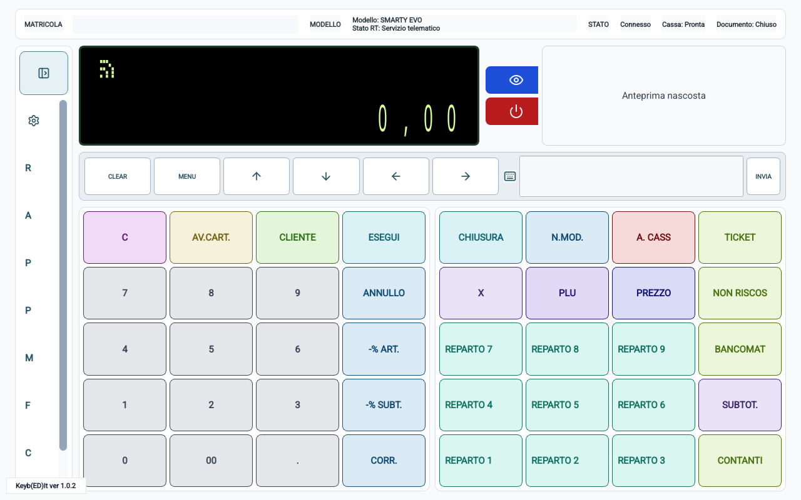
- Barra in alto
- Indica quale cassa stai usando, il collegamento e lo stato del documento.
- Display nero
- Mostra messaggi, richieste e importi della cassa. Leggilo dopo ogni comando.
- Menu a sinistra
- Apre le barre laterali con Impostazioni, Reparti, Ateco, Articoli, Pagamenti, Modificatori, Funzioni e Clienti. In fondo trovi Help e Assistenza online.
- Liste
- Scorri per trovare una voce. Il pulsante con la freccia circolare aggiorna le liste disponibili dalla cassa. Toccare un reparto, articolo o pagamento può eseguire subito l'operazione: non è una semplice anteprima.
- Tastiera colorata
- Riproduce i tasti del registratore: numeri, reparti, pagamenti e comandi.
- Frecce e MENU
- Servono per muoversi e confermare nelle schermate della cassa. MENU e ESEGUI sono pulsanti distinti: segui quello richiesto dalla procedura e dal display.
- Inserisci testo
- Serve per inviare una descrizione o un dato quando il registratore lo richiede. Non usarlo per battere prezzi o impartire sequenze di tasti.
Sul tablet, se una lista aperta toglie spazio alla tastiera, richiudila o riduci il menu. Prima di confermare assicurati di vedere il display e il pulsante desiderato.
Leggere un articolo con la fotocamera
La fotocamera può leggere i codici dei prodotti predisposti sulla cassa. Prima di usarla, segui la configurazione della fotocamera: l'invio dalla schermata di vendita è automatico.
IL MENU DELL'APP
Usare le barre laterali
Le barre laterali sono i pannelli che si aprono accanto alla tastiera. Tocca il pulsante in alto nel menu per espandere o ridurre i nomi delle voci. Se una lista è già aperta, lo stesso pulsante la richiude; per richiuderla puoi anche toccare di nuovo la sua voce.
- Impostazioni
- Il pulsante a ingranaggio apre collegamento, abbonamento, segnalazione di problemi e regolazioni della fotocamera. Scorri il pannello per raggiungere i riquadri più in basso. Premi Chiudi o di nuovo l'ingranaggio per tornare alla tastiera.
- Reparti
- Mostra i reparti della cassa con le indicazioni IVA disponibili. Dopo aver digitato un prezzo, toccare una voce registra la vendita su quel reparto.
- Ateco
- Seleziona una delle attività già predisposte nel registratore. Non serve per creare o cambiare la tua attività fiscale.
- Articoli
- Mostra i prodotti memorizzati nella cassa. Il titolo della lista può essere PLU. Toccare un prodotto ne richiama la vendita.
- Pagamenti
- Mostra le modalità di incasso disponibili e le relative indicazioni. Toccare una voce può chiudere subito il documento.
- Modificatori
- Applica una correzione, uno sconto, una maggiorazione o un'altra operazione prevista dalla cassa. Non è un elenco di prodotti.
- Funzioni
- Richiama letture, chiusure, resi, annulli e programmazioni. Prima dell'invio compare una conferma con il nome della funzione.
- Clienti
- Richiama un'anagrafica già memorizzata nel registratore. È diverso dal tasto CLIENTE sulla tastiera, usato anche per inserire un codice fiscale o lotteria.
- Help
- Il libro aperto riapre questa guida nel browser. Non avvia una conversazione con un operatore.
- Assistenza online
- Apre il canale di assistenza esterno. Usalo quando serve l'intervento di un operatore, non per confermare operazioni sulla cassa.
Che cosa trovi nelle Impostazioni
- Modalita connessione: per collegare o scollegare la cassa. Non cambiare collegamento durante una vendita.
- Dispositivo ECR: quando disponibile, mostra matricola e modello. Serve a controllare che il registratore sia quello giusto, non a modificarne i dati.
- Abbonamento: per scegliere un piano o ripristinare un acquisto.
- Segnala un problema: per descrivere una difficoltà e preparare una segnalazione all'assistenza.
- Fotocamera: per scegliere la camera e regolare l'immagine.
Finché le Impostazioni sono aperte, la tastiera di vendita non è utilizzabile e la scansione della schermata principale viene sospesa. Chiudendo il pannello può riattivarsi se prima era accesa: prima di tornare alla vendita allontana dall'obiettivo i codici che non vuoi leggere.
LETTURA DEI CODICI
Impostare e usare la fotocamera
Le regolazioni di orientamento descritte qui si riferiscono all'anteprima del tablet Android. Su PC l'immagine dipende anche dalla webcam e dalle impostazioni del dispositivo.
Regolarla la prima volta
- Apri Impostazioni e scorri fino al riquadro Fotocamera.
- Se è spenta, tocca il pulsante con il simbolo di accensione. Sul dispositivo consenti l'accesso alla fotocamera quando viene richiesto.
- Con Camera passa fra frontale e posteriore, se entrambe disponibili. Scegli quella comoda per inquadrare il prodotto; un PC con una sola camera potrebbe non consentire il cambio.
- Se l'immagine è di lato, premi Ruota: ogni tocco la gira di un quarto di giro.
- Se l'immagine risulta specchiata, usa Mirror per attivare o togliere l'effetto specchio.
- Le regolazioni vengono memorizzate mentre le cambi, separatamente per le due camere. Non devi cercare un pulsante Salva.
- Chiudi le Impostazioni e controlla l'anteprima nella schermata principale.
Puoi regolare l'immagine senza battere articoli. Nel riquadro Fotocamera delle Impostazioni la lettura dei codici è disattivata. Nella schermata principale, invece, i codici letti vengono inviati alla cassa.
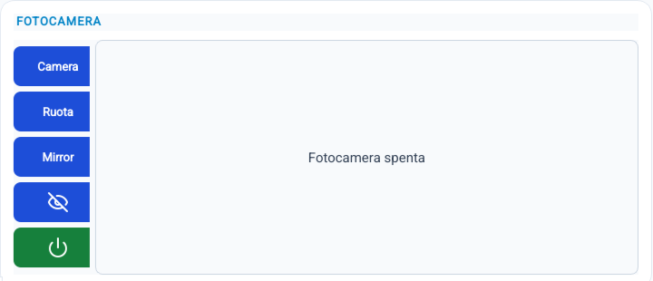
Riconoscere i pulsanti
- Simbolo di accensione
- Accende o spegne fotocamera e scansione. Il pulsante verde invita ad accendere; quello rosso invita a spegnere.
- Simbolo dell'occhio
- Mostra o nasconde soltanto l'anteprima. La lettura continua anche con l'immagine nascosta.
- Camera, Ruota, Mirror
- Sono le regolazioni disponibili nel pannello Impostazioni, non i comandi per registrare una vendita.
Leggere un prodotto durante la vendita
- Controlla collegamento e stato del documento. Il prodotto deve essere già memorizzato sulla cassa con il suo codice.
- Accendi la fotocamera nella schermata principale e mostra l'anteprima con l'occhio, se serve.
- Inquadra un solo codice, con buona luce, mantenendo il dispositivo fermo per un istante.
- Alla lettura, allontana il codice e verifica sul display descrizione, prezzo e quantità. Non devi premere INVIA per la scansione automatica.
- Passa al prodotto successivo soltanto dopo il riscontro. Per smettere di leggere usa il pulsante di accensione, non l'occhio.
Non vedo l'immagine o ho negato il permesso
Controlla che la camera sia accesa e l'anteprima non sia nascosta. Su Android apri le impostazioni del dispositivo, cerca Keyb(ED)It! fra le app e abilita l'autorizzazione Fotocamera, poi torna all'app. Su PC controlla le autorizzazioni della camera e che un'altra applicazione non la stia usando. Se compare un errore, annotalo e contatta l'assistenza.
PIANO DELL'APP
Abbonarsi e ripristinare gli acquisti
Nell'app Android i pagamenti della cassa richiedono un abbonamento attivo. La sottoscrizione si acquista con Google Play: non è il pagamento di uno scontrino del negozio. Il piano mensile o annuale riguarda l'utilizzo dell'app.
Sottoscrivere un piano
- Controlla la connessione Internet del tablet e l'account con cui usi Google Play.
- Apri Impostazioni → Abbonamento. Attendi la verifica: se un piano è già attivo, non acquistarne un altro per tentativi.
- Scegli Mensile oppure Annuale. Leggi il prezzo mostrato e le condizioni della finestra di Google Play, comprese durata e rinnovo.
- Conferma l'acquisto nella finestra Google Play solo se vuoi sottoscriverlo. Se rinunci, annulla quella finestra.
- Torna all'app e attendi la comparsa di Piano mensile attivo oppure Piano annuale attivo. Poi chiudi le Impostazioni.
Acquisto e ripristino tramite Google Play sono disponibili nell'app Android, non nei pulsanti della versione PC. Se i piani non sono disponibili o i pulsanti restano inattivi, verifica Internet e Google Play e chiedi assistenza: non ripetere acquisti.
Ho già pagato, ma il piano non risulta attivo
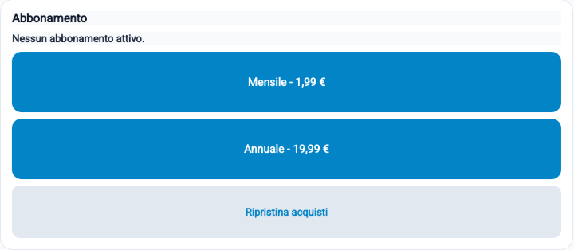
- Usa su Google Play lo stesso account dell'acquisto e verifica che la sottoscrizione sia ancora attiva.
- In Impostazioni → Abbonamento premi Ripristina acquisti una volta e attendi l'aggiornamento.
- Ricontrolla il piano indicato nell'app. La scritta Ripristino acquisti avviato indica soltanto l'avvio della verifica, non la conferma del piano.
- Se il piano continua a mancare o i pagamenti restano bloccati, contatta l'assistenza con il messaggio visualizzato. Non emettere uno scontrino soltanto per provare se l'abbonamento funziona.
Controllare il rinnovo o annullarlo
Gestisci la sottoscrizione nella sezione Abbonamenti di Google Play, con l'account che ha effettuato l'acquisto. Controlla lì rinnovo e scadenza e segui le opzioni disponibili. Disinstallare l'app o disconnettere la cassa non annulla l'abbonamento. Ripristina acquisti non serve ad annullarlo né a richiedere un rimborso.
SCEGLIERE COSA VENDERE
Liste Reparti e Articoli
Reparti: importo e categoria corretta
Apri Reparti, scorri e leggi nome e indicazione IVA. Digita il prezzo con i tasti numerici della cassa, poi tocca il reparto una volta. La selezione registra la riga: controlla il display prima di passare al prodotto successivo. Non scegliere una voce soltanto perché il nome sembra simile.
I tasti reparto della tastiera e la lista sono due modi per richiamare i reparti; la lista aiuta quando quelli che cerchi non compaiono sui tasti visibili. Per modificare un nome segui la procedura dedicata: non si modifica toccandolo nella lista.
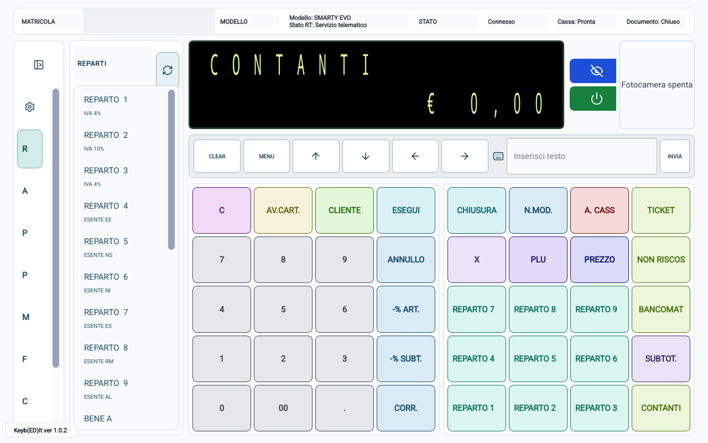
Articoli: prodotti già memorizzati
- Apri Articoli. Il pannello può avere il titolo PLU.
- Trova il prodotto e controlla il nome e l'eventuale informazione sul reparto associato.
- Toccalo una sola volta e attendi il riscontro sulla cassa.
- Verifica il prezzo effettivamente registrato. Se viene chiesto un importo o segnalato un errore, segui la richiesta senza ripetere il tocco.
La lista richiama i prodotti della cassa; non crea un articolo nuovo e non imposta da sola un prezzo mancante. Anche la lettura del codice prodotto richiede un articolo già predisposto.
Se il tecnico ha cambiato nomi, prezzi o associazioni, aggiorna la lista dalla cassa prima di usarla. Una lista vuota non va risolta registrando un prodotto su un reparto casuale.
PIÙ ATTIVITÀ SULLA STESSA CASSA
Scegliere l'attività ATECO
Se il registratore è predisposto per più attività, il pannello Ateco permette di scegliere quella a cui si riferisce la vendita. Non è il reparto del prodotto e non è una modifica della tua posizione fiscale.
- Fatti indicare dal tecnico o dal responsabile quale attività usare per le diverse vendite.
- Prima di registrare le righe interessate, apri Ateco e leggi i codici disponibili.
- Tocca la voce corretta una sola volta.
- Controlla il riscontro sul display. La cassa può indicare ATECO CORRENTE con il numero della posizione selezionata.
- Prosegui con reparti o articoli della vendita e verifica il documento emesso.
Prima di un documento successivo non dare per scontato che l'attività cambi automaticamente: controllala o seleziona quella prevista. Non digitare il codice ATECO nel campo del prezzo o in Inserisci testo.
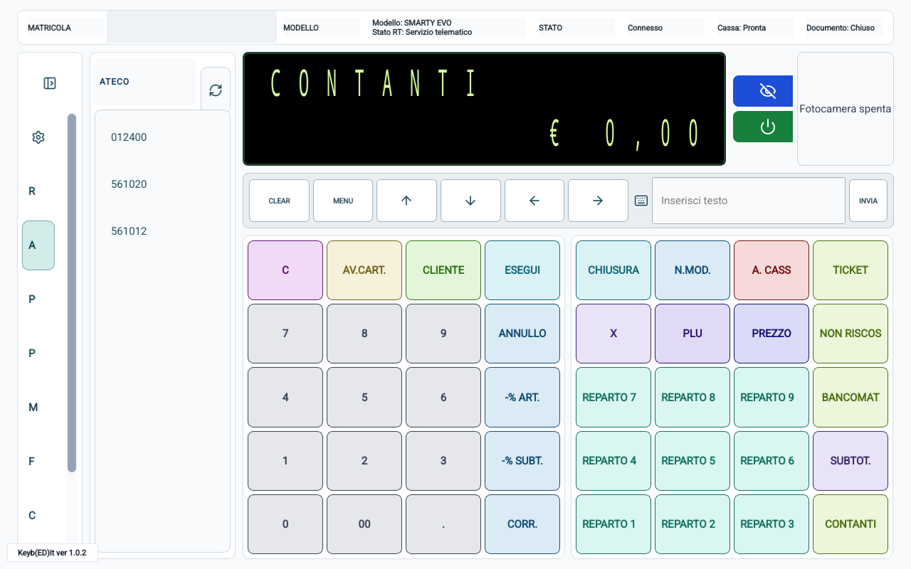
ANAGRAFICHE GIÀ PRESENTI
Usare la lista Clienti
La barra laterale Clienti mostra le anagrafiche memorizzate nella cassa: nome o ragione sociale e, quando disponibili, codice fiscale o partita IVA.
- All'inizio dell'operazione apri Clienti.
- Scorri e verifica sia il nome sia l'identificativo fiscale. In caso di omonimia non scegliere soltanto dal nome.
- Tocca il cliente una volta: la selezione viene inviata alla cassa.
- Controlla il riscontro sul display prima di registrare o completare il documento.
Se l'anagrafica manca o è stata modificata sul registratore, aggiorna Clienti. La lista non contiene un pulsante per creare o modificare anagrafiche: chiedi al responsabile la procedura predisposta sulla tua cassa.
Clienti nella lista o CLIENTE sulla tastiera?
- Clienti nel menu: richiama una persona o un'azienda già memorizzata.
- CLIENTE sulla tastiera della cassa: apre anche l'inserimento di un dato, per esempio il codice fiscale o il codice lotteria. Non richiede necessariamente un'anagrafica salvata.
DATI DEL CLIENTE SUL DOCUMENTO
Fare uno scontrino parlante
Per uno scontrino con il codice fiscale del cliente, inserisci il dato prima di registrare le righe. Non devi prima creare una voce nella lista Clienti.
- Parti con la cassa pronta e nessun documento aperto.
- Premi CLIENTE sulla tastiera colorata, non Clienti nel menu laterale.
- Attendi la richiesta TESTO/CF/PI/LOT. oppure TESTO/CF/PI.
- Tocca Inserisci testo, elimina eventuale testo rimasto e scrivi il codice fiscale fornito dal cliente, senza spazi.
- Premi INVIA una sola volta. Attendi CODICE OK e controlla il dato sul display. L'invio completa il campo: non aggiungere un secondo CLIENTE se il dato è già stato accettato.
- Registra prodotti, controlla il totale e completa il pagamento normalmente.
- Prima di consegnare il documento, verifica che il codice fiscale stampato sia quello richiesto dal cliente.
Il codice fiscale personale normalmente ha 16 caratteri; una partita IVA ha 11 cifre e viene accettata nello stesso campo quando prevista. Usa sempre il dato effettivo del cliente: non inventare cifre e non sostituirlo con un nome o un codice lotteria.
PRIMA DELLE RIGHE DI VENDITA
Inserire il codice lotteria
Usa il codice lotteria di 8 lettere e/o cifre fornito dal cliente, non il codice fiscale. La funzione deve essere abilitata sul registratore.
- Con la cassa pronta e il documento chiuso, premi CLIENTE sulla tastiera della cassa.
- Attendi il campo TESTO/CF/PI/LOT..
- Nel campo Inserisci testo cancella l'eventuale testo precedente e scrivi gli 8 caratteri del codice lotteria, senza spazi.
- Premi INVIA una volta e controlla il riscontro ID LOTT. Non reinviare lo stesso dato solo perché rimane nel campo di testo dell'app.
- Se la cassa chiede ID LOTT?, ricontrolla il codice e conferma con MENU; per rinunciare usa C.
- Registra gli articoli e completa con il pagamento elettronico ammesso dalla configurazione della cassa.
- Controlla codice e indicazioni lotteria sul documento, insieme all'esito effettivo del pagamento.
Se il codice viene letto con la fotocamera, inquadralo soltanto dopo aver aperto il campo CLIENTE e controlla lo stesso riscontro. Un codice letto o digitato non garantisce da solo la partecipazione: devono essere rispettate anche le condizioni del documento e del pagamento.
Chiarisci con il cliente se richiede un documento con codice fiscale oppure il codice lotteria. L'inserimento di uno dei due può sostituire il dato precedente: non inviarli entrambi come se fossero due note aggiuntive.
VENDITA QUOTIDIANA
Fare uno scontrino
Parti con la cassa pronta e nessun documento aperto. Gli importi si digitano con i tasti numerici della tastiera della cassa.
- Apri Reparti per vedere i nomi disponibili.
- Digita l'importo e tocca il reparto corretto nella lista, oppure il corrispondente tasto reparto.
- Attendi e verifica descrizione e importo sul display.
- Ripeti per gli altri prodotti.
- Premi SUBTOT. per controllare il totale.
- Scegli il pagamento. A fine operazione attendi la stampa e Documento: Chiuso.
Più pezzi dello stesso prodotto
Digita la quantità, premi X, digita il prezzo di un pezzo e tocca il reparto. Per esempio, per 3 pezzi da 5,00 euro: 3 X 5 0 0, poi reparto. Verifica il totale di 15,00 euro.
Un prodotto venduto a peso
Se il reparto è predisposto per la quantità decimale, per 1,5 kg a 4,00 euro al kg tocca 1 . 5 X 4 0 0, poi il reparto corretto. Il totale atteso è 6,00 euro. Il punto qui separa la quantità; il prezzo di 4,00 euro si inserisce come 400.
Articoli già memorizzati
Apri Articoli e scegli il prodotto predisposto sulla cassa. Controlla la descrizione e il prezzo registrati. Se il prezzo non è impostato o la cassa chiede un dato, segui il display senza ripetere la selezione.
INCASSO
Incassare un pagamento
Tutto in contanti
Dopo aver controllato il totale, premi CONTANTI (oppure CASSA, secondo la tastiera) per saldare l'importo residuo.
Se vuoi indicare quanto ti ha consegnato il cliente, digita la somma ricevuta prima di premere CONTANTI e controlla il resto.
Tutto con carta
Premi BANCOMAT o scegli il pagamento elettronico predisposto nella lista Pagamenti. Verifica anche l'esito sul POS: la registrazione del pagamento sulla cassa, da sola, non garantisce che la carta sia stata addebitata.

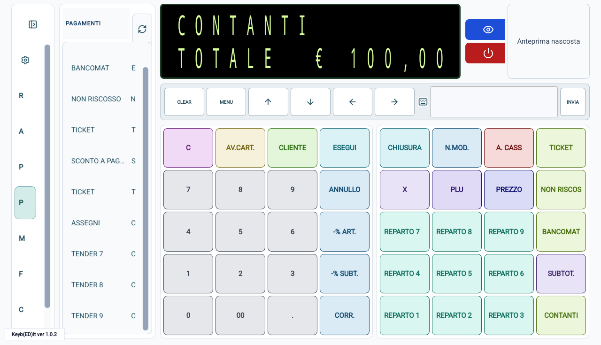
Una parte in contanti e una parte con carta
- Controlla il totale con SUBTOT..
- Digita la quota in contanti e premi CONTANTI.
- Controlla il residuo sul display.
- Premi BANCOMAT senza digitare un nuovo importo per saldare il residuo.
- Verifica pagamento, stampa e chiusura del documento.
Controllo nell'esempio: il documento deve distinguere 10,00 euro in contanti e 10,00 elettronici, senza resto. Se dopo il primo pagamento il documento è ancora aperto e mostra il residuo, è normale: manca il saldo, non una seconda vendita. Non digitare nuovamente 2000 prima di BANCOMAT.
Ticket e importi non riscossi
Usa queste voci solo se predisposte per la tua attività. Per i ticket segui anche l'eventuale richiesta del numero di buoni. NON RISCOSSO non equivale a un incasso e non serve ad annullare uno scontrino. Se non sai quale voce scegliere, chiedi al tuo referente prima di chiudere.
PRIMA DEL PAGAMENTO
Sconti e omaggi
Aprendo Modificatori trovi anche maggiorazioni, reso, fondo cassa, prelievo, recupero crediti, acconti e buoni. La scelta agisce sulla cassa: usa solo la voce prevista per l'operazione in corso. Le abbreviazioni ART riguardano l'articolo, SBT il subtotale; % indica una percentuale, mentre $ indica un importo.
Questa lista non ha il pulsante di aggiornamento dalla cassa. Alcune voci possono avere nomi simili o ripetuti, ma effetti diversi: non sceglierle a caso e non usare RESO o ANNULL. come sostituti delle procedure per un documento già emesso.
Sconto percentuale sull'ultimo articolo
- Registra il prodotto e controllalo sul display.
- Digita la percentuale, per esempio 1 0 per il 10%.
- Premi -% ART. e verifica lo sconto.
Sconto percentuale sul totale
Registra tutti i prodotti, premi SUBTOT., digita la percentuale e premi -% SUBT.. Controlla il nuovo totale prima di incassare.
Per uno sconto di importo fisso usa soltanto il modificatore predisposto sulla tua cassa, secondo le indicazioni del tecnico: non digitare una somma su un tasto percentuale.
Offrire un prodotto in omaggio
- Registra il prodotto al suo prezzo.
- Subito dopo, apri Modificatori e scegli OMAGGIO.
- Non digitare un secondo importo. Controlla la riga OMAGGIO e la riduzione del totale.
- Prosegui con gli altri prodotti o con il pagamento.
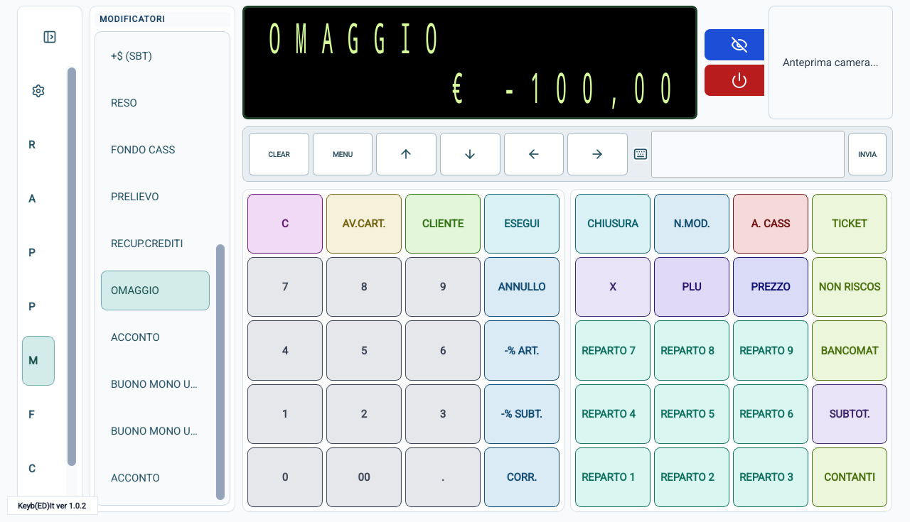
OPERAZIONI DEL REGISTRATORE
Usare la lista Funzioni
- Apri Funzioni e scorri l'elenco. Il numero a fianco aiuta a distinguere le voci, ma non è una somma da digitare.
- Tocca la funzione desiderata una volta.
- Leggi il nome nella finestra Conferma funzione. Per rinunciare premi CANC (oppure Cancel nelle schermate precedenti).
- Premi OK soltanto se il nome è corretto. Poi leggi le richieste della cassa e procedi secondo il display.
- Letture e rapporti
- Servono a consultare o stampare riepiloghi. Non confondere una lettura con una chiusura o un azzeramento dal nome simile.
- Chiusure
- Concludono le operazioni previste dalla cassa. Per quella giornaliera segui Chiudere la giornata; non eseguire tutte le voci di chiusura per tentativi.
- Annulli e resi
- Riguardano documenti già emessi e richiedono i riferimenti dell'originale. Leggi annullamento o reso prima di iniziare.
- Programmazioni
- Modificano dati nel registratore, non soltanto nell'app. La descrizione di un reparto è trattata a parte; per impostazioni fiscali e configurazioni rivolgiti al tecnico.
VEDERE LE VOCI AGGIORNATE
Aggiornare le liste dalla cassa
Se sul registratore sono cambiati reparti, articoli, pagamenti o clienti, le liste dell'app possono mostrare ancora i dati precedenti. Aggiornare significa rileggere dalla cassa: non trasferisce una nuova programmazione dall'app al registratore.
- Completa eventuali operazioni in corso e attendi che la cassa sia collegata e identificata.
- Apri la lista da aggiornare: Reparti, Ateco, Articoli, Pagamenti oppure Clienti.
- Tocca una volta la freccia circolare in alto accanto al titolo della lista.
- Attendi la fine della finestra di risincronizzazione e leggi il messaggio di esito. Non avviare altri aggiornamenti o vendite durante l'attesa.
- Controlla le voci ricaricate prima di utilizzarle. Se sono ancora vuote o sbagliate, verifica la configurazione con il tecnico.
- Reparti
- Rilegge reparti e relative indicazioni IVA. Se mancano anche altri dati iniziali, l'app può effettuare un caricamento più ampio.
- Ateco
- Rilegge le attività disponibili. Se la cassa non ne ha predisposte, l'aggiornamento non ne crea.
- Articoli
- Aggiorna prima i reparti e poi gli articoli, per mantenere coerenti le associazioni. Attendi entrambe le fasi.
- Pagamenti
- Rilegge nomi e caratteristiche dei pagamenti configurati sul registratore.
- Clienti
- Rilegge le anagrafiche presenti nella cassa. Non recupera automaticamente contatti dal telefono o da Google.
Modificatori e Funzioni non hanno questo pulsante: non cercare di aggiornarli selezionando una voce. Aggiornare una lista non emette una vendita, non esegue una chiusura e non equivale a Ripristina acquisti, che riguarda solo l'abbonamento.
RIMEDIARE A UN ERRORE
Correggere o annullare
Importo digitato, ma non ancora registrato
Premi C per cancellare l'immissione numerica, controlla il display e digita l'importo corretto. Questo non elimina uno scontrino già emesso.
Rinunciare a tutta la vendita ancora aperta
Sulla tastiera SMARTY EVO illustrata, prima di qualsiasi pagamento, puoi annullare tutte le righe della vendita in corso: esci da eventuali richieste aperte, controlla che si tratti proprio del documento da abbandonare, digita 9 9 e premi N.MOD. Se viene richiesta un'autorizzazione, falla inserire al responsabile. Attendi il termine dell'operazione e verifica totale zero e Documento: Chiuso.
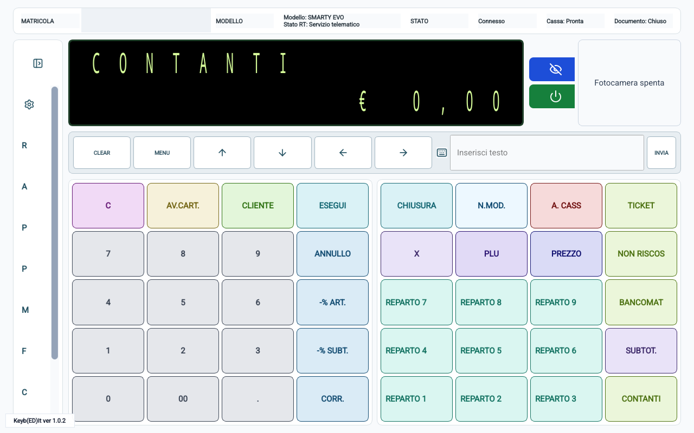
Scontrino già emesso
Per annullare l'intero documento usa la funzione di annullamento, non il tasto ANNULLO della tastiera di vendita.
- Conserva lo scontrino originale. Controlla che non ci sia un'altra vendita aperta.
- Apri Funzioni e seleziona la voce di annullamento documento. Leggi la richiesta di conferma prima di premere OK.
- Segui le richieste sul display: verifica la matricola del registratore e inserisci numero di chiusura, numero dello scontrino e data riportati sul documento originale. Usa i tasti della cassa e conferma ogni campo con MENU quando richiesto.
- Alla richiesta ANNULLO AUTO? ricontrolla i riferimenti. Conferma con MENU soltanto se vuoi annullare l'intero documento.
- Attendi il documento di annullamento, verificane il riferimento e conservalo insieme all'originale.
Se hai già registrato una riga sbagliata ma non hai ancora chiuso lo scontrino, chiedi la procedura di correzione prevista per la tua tastiera: non completare un incasso errato per poi tentare di rimediare.
RESTITUZIONE DELLA MERCE
Fare un reso
Usa il reso per una restituzione, non per correggere un pagamento. Tieni a portata di mano lo scontrino originale e concorda come restituire l'importo al cliente.
- Verifica che la cassa sia pronta e il documento chiuso.
- Apri Funzioni, seleziona la voce di reso documento e controlla la conferma.
- Inserisci i riferimenti richiesti, copiandoli dallo scontrino: matricola, numero di chiusura, numero documento e data. Conferma i campi con MENU come richiesto dal display.
- Alla scelta RESO: AUTO, scegli il percorso appropriato sotto.
Reso dell'intero documento
Se la cassa consente il recupero automatico, lascia AUTO e conferma con MENU. Il documento viene recuperato senza ribattere gli articoli. Verifica la stampa prima di qualsiasi altra operazione.
Reso di una parte
Con la freccia giù seleziona MANUALE e conferma con MENU. Attendi PRATICA DI RESO, poi registra soltanto gli articoli o gli importi restituiti, sui reparti corretti. Controlla il totale e completa con la modalità di rimborso concordata e predisposta.
FINE GIORNATA
Chiudere la giornata
La chiusura fiscale non è la chiusura dell'app. Eseguila quando hai terminato le operazioni della giornata.
- Completa eventuali documenti aperti. Controlla carta e collegamento della cassa.
- Apri Funzioni e scegli CHIUSURA FISCALE.
- Leggi la finestra CHIUSURA FISCALE?. Premi OK una sola volta; per rinunciare premi Cancel.
- Attendi la conclusione delle stampe e delle operazioni della cassa. Non spegnerla e non inviare altre funzioni durante l'attesa.
- Controlla il riepilogo e l'esito della trasmissione riportati dalla cassa. Conserva la stampa.
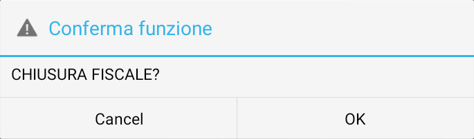
Una chiusura eseguita e una trasmissione riuscita non sono la stessa cosa. Se la cassa segnala un invio non riuscito, annota il messaggio e contatta l'assistenza: non ripetere la chiusura soltanto per tentare un nuovo invio.
PERSONALIZZARE I NOMI
Cambiare la descrizione di un reparto
Questa procedura modifica il nome memorizzato nel registratore. Non cambia soltanto la scritta sul tablet e non rinomina una vendita già registrata.
- Apri Funzioni, scegli PROGR. REPARTI e controlla la finestra di conferma.
- Quando il display mostra REPARTO:, digita il numero del reparto con i tasti numerici della cassa e conferma con MENU.
- Raggiungi il campo DESCRIZIONE con le frecce su e giù.
- Tocca Inserisci testo, cancella l'eventuale testo precedente e scrivi il nuovo nome. Usa lettere senza accenti, cifre e spazi; per i reparti mantieniti entro 19 caratteri, spazi compresi.
- Premi INVIA una sola volta. Controlla il nome ricevuto dalla cassa; non aggiungere altre conferme se il display è già passato al campo successivo.
- Da un campo successivo che non hai modificato, usa CLEAR per richiedere l'uscita. Alla domanda USCIRE? scegli SI con le frecce e conferma con MENU.
- Torna in Reparti, aggiorna la lista con la freccia circolare e verifica il nome. Controlla anche che il documento risulti chiuso.
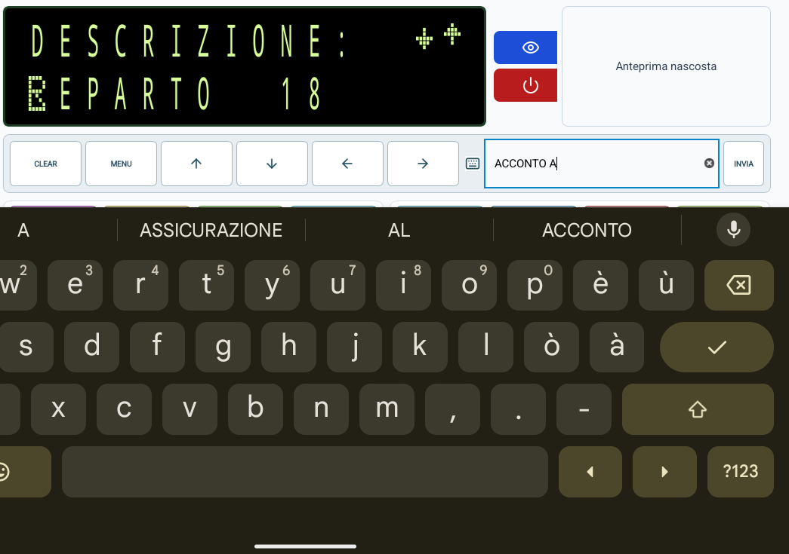
Devo passare a un altro reparto
Con le frecce raggiungi GRUPPO, l'ultimo campo, poi premi MENU. Digita un altro numero soltanto quando ricompare REPARTO:. Le frecce destra e sinistra nella descrizione spostano il cursore: non selezionano un altro reparto.
IL CLIENTE PAGA PRIMA DEL RITIRO
Acconti e beni da consegnare
Acconto su un bene già individuato
Quando il cliente paga una parte del prezzo di un bene definito, l'acconto è normalmente rilevante per l'IVA già al pagamento, per la somma incassata. Non scegliere una voce «non soggetta» solo perché il prodotto verrà consegnato più avanti.
- Con la cassa pronta, individua il reparto dedicato all'acconto del bene, con l'aliquota corretta già predisposta.
- Digita soltanto l'importo ricevuto in anticipo, non l'intero prezzo del bene, e seleziona quel reparto.
- Controlla descrizione, importo e IVA e chiudi con il pagamento effettivamente ricevuto.
- Conserva il documento e collega acconto, cliente e ordine secondo l'organizzazione del negozio.
Consegna del bene e saldo
- Recupera il documento dell'acconto e verifica che non sia già stato utilizzato o rimborsato.
- Registra il bene al prezzo previsto, sul suo reparto corretto.
- Subito dopo la riga a cui si riferisce, applica il recupero dell'acconto con il modificatore predisposto. Nella tastiera illustrata la sequenza è: importo dell'acconto, PREZZO, 15, N.MOD.
- Verifica la riga negativa ACCONTO e il residuo da incassare. Non deve essere una nuova somma positiva.
- Incassa soltanto il saldo e conserva il collegamento fra i due documenti.
Il recupero dell'acconto evita di conteggiare di nuovo l'importo già documentato; non è uno sconto commerciale. Per più beni o aliquote diverse fai predisporre la ripartizione corretta: non sottrarre tutto da una riga scelta a caso e non superare l'importo a cui il recupero si riferisce.
Somma ricevuta senza avere ancora individuato il bene
Se al pagamento non è ancora definita l'operazione a cui la somma si riferisce, non applicare automaticamente la procedura precedente. Può essere necessario un trattamento diverso, da chiarire prima con il commercialista.
Nel percorso predisposto con una voce iniziale non soggetta, l'incasso viene registrato su quella voce e documentato. Alla vendita si registrano tutti i beni con la loro IVA e si usa il pagamento dedicato per utilizzare la somma anticipata, senza ridurre l'IVA delle righe. Per l'uso del pagamento di tipo SCONTO A PAGARE segui le stesse cautele e l'ordine descritti per i buoni multiuso. Questa non è una regola generale per ogni acconto.
Il bene non viene più consegnato
Controlla quale documento deve essere rettificato: acconto iniziale e successivo documento di consegna sono distinti. Non annullarli entrambi automaticamente e non cancellare l'acconto se resta valido. Segui la procedura di annullamento o reso appropriata al caso e concorda l'eventuale restituzione del denaro. Non creare una vendita negativa improvvisata.
Vedo ACC. BENE SOSP o ACCONTO SERVIZI nelle Funzioni
Sono modalità particolari della cassa, diverse dalla registrazione ordinaria di una riga di acconto e dal suo successivo recupero. Non aggiungerle alla procedura qui sopra. Usale soltanto se il tecnico ha predisposto espressamente quel percorso: ACC. BENE SOSP richiede reparti di tipo bene e limita i pagamenti utilizzabili; ACCONTO SERVIZI richiede reparti di tipo servizio. Non mescolare nello stesso percorso modalità di acconto, reso, annullo o documento a seguire fattura.
BUONI CON TRATTAMENTO IVA GIÀ NOTO
Emettere e utilizzare un buono monouso
Monouso non significa semplicemente «spendibile una sola volta». Ai fini fiscali è il buono per il quale, fin dall'emissione, è noto il trattamento IVA dei beni o servizi a cui dà diritto. La sola durata o il numero di utilizzi non ne determina la categoria.
Il percorso seguente riguarda un buono del tuo negozio, emesso e accettato dallo stesso esercente e con voci già predisposte. Buoni di altri emittenti, commissioni, promozioni o vendite del buono sotto il valore nominale richiedono una verifica specifica.
Quando vendi il buono
- Controlla che la voce di emissione BUONO MONO, o il nome concordato, abbia l'aliquota prevista.
- Digita il valore venduto e seleziona il reparto di emissione.
- Incassa con il mezzo effettivo, per esempio contanti o carta, e verifica il documento.
- Consegna il buono con le condizioni di utilizzo del negozio e conserva un riferimento che permetta di verificarne emissione e residuo.
L'IVA è già rilevante all'emissione/trasferimento del monouso. Il reparto di emissione non va reso non soggetto per rimandarla al ritiro del bene.
Quando il cliente lo utilizza
- Verifica validità, valore disponibile e beni ammessi. La cassa non sostituisce il controllo di validità del buono.
- Registra il bene ritirato sul reparto corretto.
- Subito dopo applica il modificatore di riscatto buono monouso. Nella tastiera illustrata: importo utilizzato, PREZZO, 16, N.MOD.
- Controlla la riga negativa BUONO MONO USO e il totale residuo: il valore già documentato non deve essere tassato una seconda volta sullo stesso passaggio.
- Incassa l'eventuale differenza. Se il residuo è zero, nella tastiera illustrata chiudi con CASSA/CONTANTI senza digitare un importo: non significa che ricevi nuovo contante.
- Registra l'utilizzo o l'eventuale residuo secondo la gestione dei buoni del negozio.
Esempio con differenza: buono da 50,00 euro e bene da 80,00 euro
Questo esempio richiede un buono valido e un bene ammesso con il trattamento IVA già previsto per quel buono.
- Registra 8 0 0 0 sul reparto del bene: 80,00 euro.
- Digita 5 0 0 0, premi PREZZO, digita 1 6 e premi N.MOD.
- Verifica BUONO MONO USO -50,00, poi SUBTOT. 30,00.
- Incassa soltanto 30,00 euro con il mezzo effettivo. Registra l'utilizzo del buono nella gestione del negozio e conserva i riferimenti.
Non registrare i 50,00 euro anche in CONTANTI: li avevi già ricevuti e documentati all'emissione.
BUONI CON TRATTAMENTO IVA NON ANCORA NOTO
Emettere e utilizzare un buono multiuso
Un buono è multiuso quando all'emissione non è ancora noto il trattamento IVA dell'acquisto a cui darà diritto, per esempio perché consente di scegliere fra prodotti con aliquote diverse. Non significa semplicemente «ricaricabile» o «spendibile più volte». Fai confermare la categoria dal commercialista.
Quando vendi il buono
- Usa la voce di emissione dedicata al BUONO MULTI, predisposta come non soggetta. Non scegliere un reparto ordinario con IVA a zero per ottenere un effetto simile.
- Digita il valore, seleziona la voce e incassa con il mezzo effettivamente ricevuto.
- Controlla la descrizione e l'indicazione non soggetta nel documento e registra valore e riferimento del buono.
Per il multiuso, la cessione dei beni o la prestazione dei servizi viene rilevata al momento dell'utilizzo secondo le regole applicabili, non per il solo trasferimento iniziale del buono. Questo non significa che la merce acquistata con il buono sia senza IVA.
Quando il cliente lo utilizza
- Verifica il valore disponibile del buono e registra normalmente tutti i prodotti, ciascuno con la propria IVA.
- Premi SUBTOT. e confronta il totale con la quota di buono che vuoi utilizzare.
- Se il cliente deve aggiungere denaro, incassa prima la differenza con contanti o carta.
- Per ultimo, chiudi il residuo con la voce BUONO MULTIUSO predisposta nei Pagamenti. Nel percorso illustrato è un pagamento di tipo SCONTO A PAGARE, utilizzato per saldare il residuo.
- Controlla che le righe di vendita mantengano la loro IVA e che la quota coperta dal buono non sia stata registrata come nuovo contante o nuovo pagamento con carta.
I tocchi nell'esempio: spesa 122,00 euro, buono 50,00, differenza con carta
- Registra i prodotti e verifica SUBTOT. 122,00.
- Digita 7 2 0 0 e premi BANCOMAT: la quota con carta è 72,00 euro. Verifica anche l'esito sul POS.
- Leggi il residuo di 50,00 euro sul display. Non ribattere i prodotti.
- Apri Pagamenti e tocca una volta la voce dedicata al buono multiuso, predisposta dal tecnico. Non usare una voce dal nome simile senza averne verificato la destinazione.
- Attendi la chiusura: sul documento controlla i prodotti con la loro IVA, la quota elettronica di 72,00 euro e l'utilizzo del buono per 50,00 euro. Aggiorna il residuo del buono nella gestione del negozio.
Se sul documento l'importo pagato appare inferiore al totale, oppure zero quando tutto è coperto dal buono, non significa che il prodotto sia in omaggio: controlla l'evidenza del buono e il residuo. Per un valore del buono superiore alla spesa, non dare resto automaticamente e non aumentare il documento: gestisci l'eventuale credito residuo secondo le condizioni previste dal negozio.
Buono scaduto, da rimborsare o acquisto restituito
Interrompi il normale utilizzo e verifica con il responsabile condizioni e documenti da rettificare. L'annullo dell'acquisto pagato con un buono non riattiva necessariamente il buono stesso. Non usare la vendita di un nuovo buono, un omaggio o uno sconto per simulare un rimborso.
PAGAMENTI CONVENZIONATI
Ticket, buoni pasto e buoni convenzionati
Buoni pasto, buoni celiachia e altri strumenti convenzionati non sono automaticamente il buono regalo del negozio. Usa il pagamento dedicato alla convenzione e segui anche le verifiche dell'ente o del gestore: registrare il ticket sulla cassa non autorizza da solo il buono.
- Verifica che i prodotti e il buono siano ammessi dalla convenzione.
- Registra i beni o servizi sui reparti predisposti e controlla il totale.
- Per un ticket nella tastiera illustrata digita la quantità, premi X, digita il valore di un ticket e seleziona il pagamento dedicato nella lista Pagamenti. La quantità va indicata anche se è 1.
- Controlla il valore complessivo dei ticket registrati e completa l'eventuale residuo con contanti o carta.
- Verifica sia il documento della cassa sia l'esito della gestione del buono convenzionato.
Non dare resto in contanti sui ticket e non usarli oltre il valore del documento. Limiti, prodotti ammessi, aliquote e successivi rapporti con l'emittente dipendono dalla convenzione: non modificarli per far accettare un pagamento rifiutato.
VENDITA, INCASSO E IVA NON SONO LA STESSA COSA
Non riscosso e prestazioni di servizi
Bene consegnato ma non interamente pagato
Registra il bene sul suo reparto, incassa l'eventuale parte ricevuta e chiudi la quota che resta dovuta con NON RISCOSSO, soltanto se questa è la procedura prevista per il negozio. Controlla che il documento distingua pagato e non riscosso e conserva il riferimento del credito.
Un bene consegnato non diventa senza IVA perché non è stato pagato. In via generale la consegna rileva ai fini IVA; NON RISCOSSO non è un tasto per rimandare l'imposta a scelta.
Servizio eseguito e incassato in parte
Usa reparti di tipo servizio, non reparti di tipo bene con il solo nome cambiato. Registra la prestazione, indica il pagamento effettivo e chiudi l'eventuale differenza con NON RISCOSSO secondo la procedura predisposta.
Per i servizi, in via generale, il momento IVA è legato al pagamento; una fattura anticipata e i regimi particolari possono cambiare il trattamento. La distinzione corretta fra bene e servizio deve essere predisposta nella cassa, non decisa cambiando un nome durante la vendita.
Incasso successivo o acconto su un servizio
Prima di procedere recupera il documento originario e fai distinguere dal responsabile un acconto prima della prestazione dall'incasso successivo di una prestazione già documentata come non riscossa. Non ribattere automaticamente lo stesso servizio come una nuova vendita: rischi di duplicare quanto già registrato.
Usa il percorso di acconto, saldo o recupero crediti predisposto per quel caso, mantenendo il collegamento con il primo documento. La voce ACCONTO SERVIZI nelle Funzioni è una modalità specifica, non un passaggio obbligatorio per ogni incasso parziale.
«Seguirà fattura»
È un percorso diverso dal normale non riscosso e dallo scontrino parlante. Non attivarlo solo perché conosci il codice fiscale del cliente. Fai predisporre identificativi, documento e successiva fatturazione dal responsabile: chiudere in NON RISCOSSO non emette da solo la fattura.
PER NON CONFONDERE LE OPERAZIONI
Indicazioni fiscali e fonti
- Monouso e multiuso
- Si distinguono in base al trattamento IVA noto o meno all'emissione, non al numero di volte in cui il buono può essere usato.
- Acconto e caparra
- Non sono sinonimi. La funzione concreta della somma e gli accordi con il cliente ne determinano il trattamento: non scegliere il reparto da una parola generica.
- Prezzo scontato e uso di un buono
- Uno sconto commerciale e un pagamento tramite buono non hanno automaticamente lo stesso effetto IVA. Usa le voci dedicate, anche quando due percorsi arrivano allo stesso importo da incassare.
- Omaggio
- Un importo da incassare pari a zero non implica sempre IVA pari a zero. L'effetto fiscale dipende dal bene e dal tipo di cessione gratuita; la voce OMAGGIO deve essere predisposta per il caso corretto.
- Annullamento e reso
- Devono riferirsi a un'operazione reale e al documento corretto. Una stampa di annullo o reso non esegue automaticamente il rimborso sul POS e non ripristina da sola il credito di un buono.
Riferimenti ufficiali per il responsabile e il commercialista
Le spiegazioni sui buoni si basano sugli articoli 6-bis, 6-ter e 6-quater del DPR 633/1972, introdotti dal decreto legislativo 141/2018. Le regole generali sul momento di effettuazione di cessioni, servizi e anticipi sono nell'articolo 6 del DPR 633/1972.
- DPR 633/1972 su Normattiva: consulta il testo vigente e gli articoli indicati.
- Decreto legislativo 29 novembre 2018, n. 141, articolo 1: disciplina dei buoni-corrispettivo nella Gazzetta Ufficiale.
Verifica delle fonti: 17 ottobre 2026. Prima di cambiare la gestione del negozio controlla eventuali aggiornamenti e le regole specifiche del tuo settore. La guida non sostituisce le condizioni di una convenzione o gli adempimenti di fatturazione.
QUANDO SERVE UNA MANO
Problemi e assistenza
La cassa non si collega
Controlla che sia accesa e predisposta al collegamento. Con Wifi verifica la stessa rete e l'indirizzo corretto. Con Bluetooth controlla distanza, attivazione e autorizzazioni. Con cavo verifica collegamenti e porta selezionata. Se non si collega, comunica all'assistenza il messaggio esatto.
Il collegamento cade durante una vendita
Non ripetere le righe o il pagamento alla cieca. Controlla sulla cassa se il documento è ancora aperto e se è stato stampato. Dopo il ripristino del collegamento leggi lo stato prima di continuare; nel dubbio chiedi assistenza.
Leggo Non risponde oppure DATI NON AGGIORN.
Il collegamento può risultare ancora presente, ma l'app non riceve più riscontri recenti dalla cassa. I comandi vengono sospesi per evitare operazioni alla cieca. Non ripetere vendite o pagamenti: controlla il registratore e attendi il ripristino. Gli inserimenti di testo interrotti non vengono ripresi automaticamente; prima di riscriverli verifica il campo effettivo sulla cassa. Se la situazione continua, contatta l'assistenza.
Vedo un messaggio di errore o una richiesta inattesa
Leggi e annota il testo prima di premere altri tasti. Non insistere sulla stessa funzione e non inserire valori inventati. Se viene richiesta un'autorizzazione che non conosci, rivolgiti al responsabile o al tecnico.
Il campo Inserisci testo non viene accettato
Usalo solo quando la cassa richiede un dato compatibile, per esempio una descrizione. Numeri di reparto, importi e comandi vanno inseriti con i tasti della cassa. Non tutti i campi accettano il testo inviato: fermati se il display non cambia come previsto.
Compare una richiesta di abbonamento
Apri Impostazioni e controlla lo stato in Abbonamento. Segui acquisto e ripristino del piano: se hai già pagato, usa lo stesso account Google Play e verifica il ripristino prima di procedere a un nuovo acquisto.
Contattare il supporto
Per riaprire questa guida dall'app, tocca Help, riconoscibile dall'icona del libro aperto. La guida online richiede una connessione Internet.
Apri Assistenza online dal menu dell'app. Oppure vai in Impostazioni → Segnala un problema, descrivi cosa stavi facendo e segui la procedura di invio proposta.
Indica modello della cassa, tipo di collegamento, messaggio visualizzato e se il documento risulta aperto o chiuso. Non inviare dati dei clienti, password o informazioni di pagamento nelle immagini.
Nessun argomento trovato. Prova un'altra parola oppure svuota la ricerca.